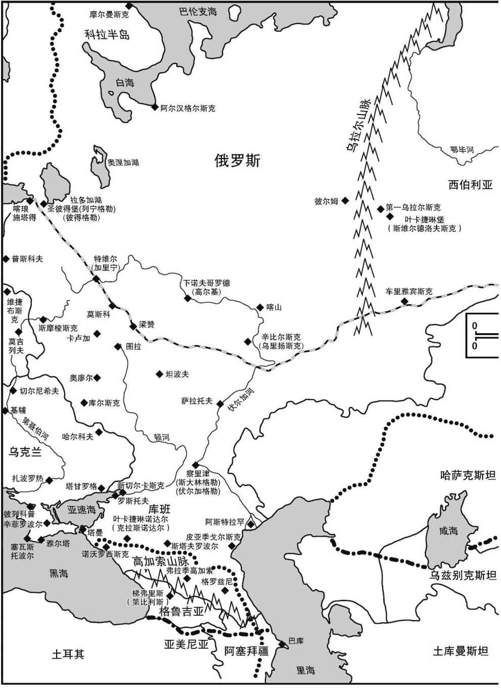
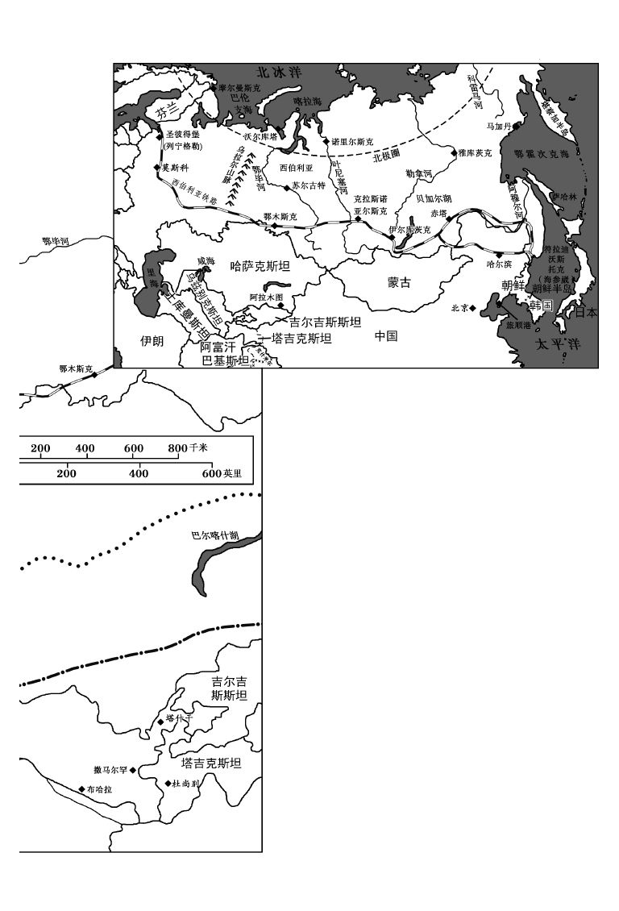
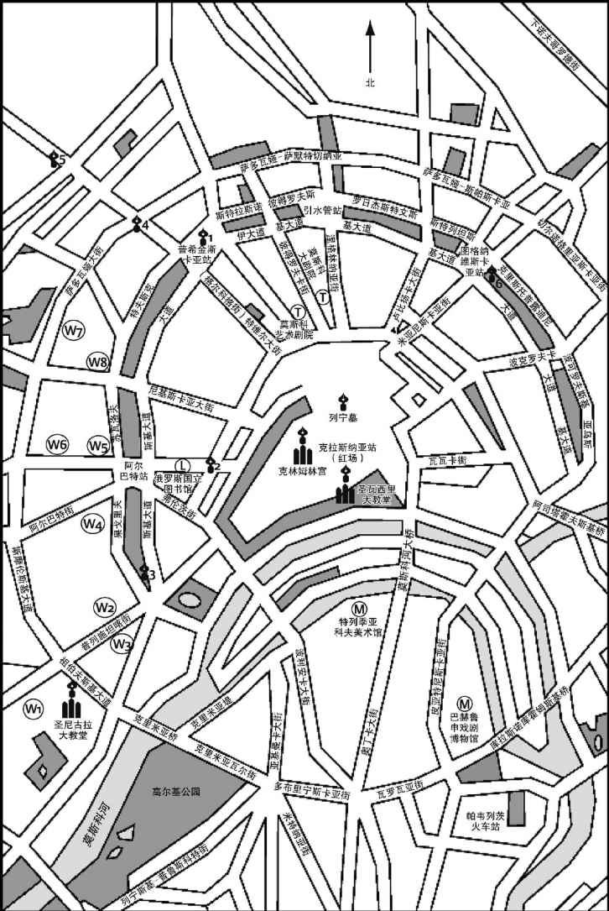
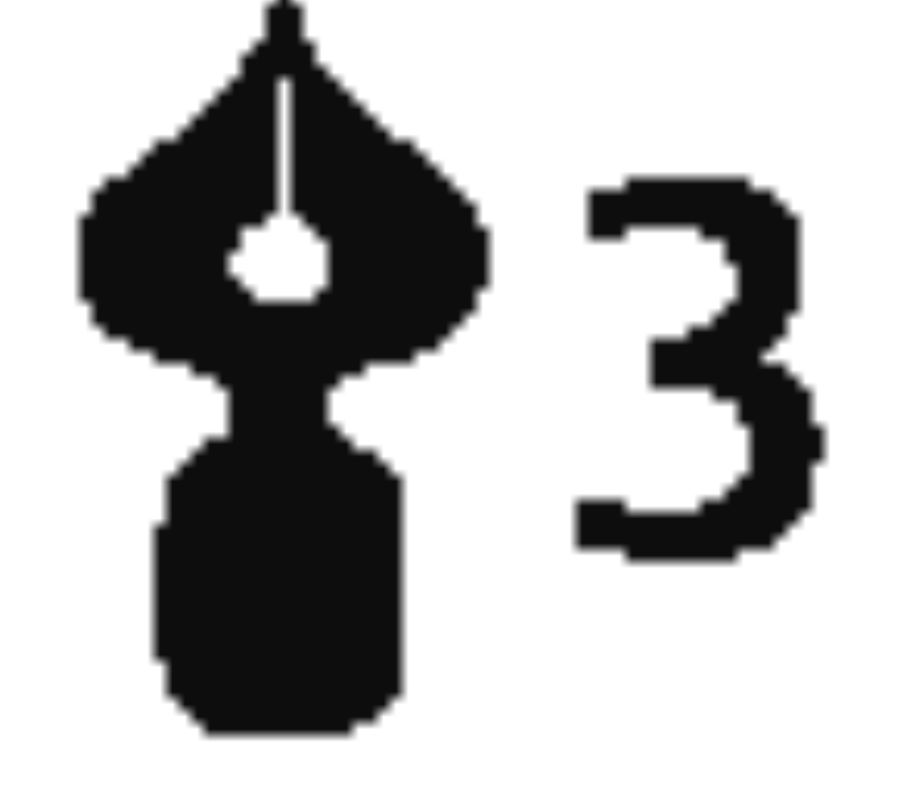
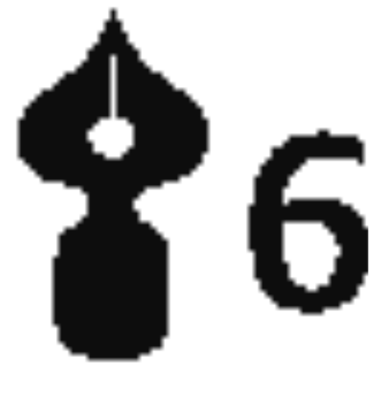

和宽泛地介绍各国文学一样，传统上，介绍俄罗斯文学也主要有三种形式。第一种是罗列所谓的“正典”，著名作家的生平和作品——普希金、陀思妥耶夫斯基、托尔斯泰、屠格涅夫、契诃夫，配以19世纪的一些次要人物和20世纪的主要作家。第二种是简述文学运动和文化制度：新古典主义、浪漫主义、现实主义、象征主义、现代主义、社会主义现实主义；审查制度、苏联作家协会和文学异见分子。第三种介绍方式是作家而非学者偏爱的，即一种个性化的文学鉴赏。拿弗拉基米尔·纳博科夫的《俄罗斯文学讲稿》或约瑟夫·布罗茨基的《小于一》来说，素材的选择显然相当主观，在大力推崇某些作家的同时，对其他作家的批判也是不遗余力。
还有一些介绍文字的撰写方式不那么旗帜分明。其一是围绕某个强有力的中心论题展开论述。例如，尤里·特尼亚诺夫在他的精彩著作《拟古者与革新者》（Archaists and Innovators ，1929）中就提出，文学演变的动因来自作家们对现有文本的态度，这些文本表现世界的方式可能是消极模仿、积极抵制，或吸收与改造并行。另一种写法是深入分析文学语言的某一技术层i面。例如，米哈伊尔·加斯帕罗夫的俄语诗格史就考察了人们对韵律形式的偏好如何随着时代变迁而变化，并细究了在某一历史节点，某些特定的韵律形式所承载的重要意义。
本书不属于以上任何一类，尤其不属于前两类。当前已有不少直线式概述俄罗斯文学史的优秀著作，再写一部已是多余，尤其是一部将有着大量重要作家（其中很多人写过复杂的大部头作品）的文学文化简化得面目全非的著作。同样，我对于以某个“重要概念”为核心展开讨论也持谨慎态度，因为已经有太多关于俄罗斯文学的思考把复杂的文本简化为空洞的滥调：什么把“多余的人”作为小说的中心主题啦，诸如此类。另一方面，像特尼亚诺夫那样的理论探讨需要一些空间才能展开，而且如果对它阐释的原始素材不够熟悉，理解起来就很困难。因此，我决定效仿早期出版的一本“牛津通识读本”——玛丽·彼尔德和约翰·亨德森那部雄辩而迷人的著作《古典学》（Classics ）。《古典学》没有遵循学校里教授这门课程的惯例，匆匆浏览一遍伯罗奔尼撒战争、希腊人与波斯人的恩怨、作为民主滥觞的雅典、管道系统的源头罗马城、征服不列颠以及其他一系列标志性历史事件，而是把焦点锁定在一种特定的手工艺品上：阿卡迪亚地区巴赛城内那座阿波罗神庙的浮雕饰带，以它们为起点，展开对各种问题的广泛探讨，那些都是当代古典世界专业研究领域关心的问题，也关乎人们对古典时代不断改变的态度。
要撰写一部介绍俄罗斯文学及其思考和探讨方式的通识读本，一个类似的方法是围绕一个相当于莎士比亚，或者说相当于巴赛城的大理石雕像那样的俄罗斯人物——亚历山大·普希金（1799—1837）展开。从高加索地区的殖民化到沙龙文化，普希金的作品本身涉及很多当代文学史的核心主题。学界用了很多不同的评论方法来研究那些文本，从考据学或不同手稿间的比较，到形式主义，再到女性主义。“普希金神话”（作家作为“俄罗斯文学之父”）的形成也提出了各种各样有趣的问题，诸如文学史如何被创造、“民族文学”的概念如何产生，以及这些过程如何使得某些类型的作品（例如俄罗斯女性的作品）看似边缘化。
以这种方式来撰写一个民族的文学，并不是说我要揭露爱国评论家们对读者犯下的欺骗罪行。普希金与但丁、莎士比亚或歌德一样，天赋异禀，思想深邃：阅读他的作品回报颇丰。然而这类民族作家的盛名可能会让人望而却步，因为他们身边总围着一群“看家狗”评论家，这类评论家往往不怎么关心如何赞美自己所保护的东西，而更孜孜于把他人挡在门外（这倒也确是看家狗所为）。这类盛名有时也会让评论家们产生粗枝大叶的反应。（想想我前几行刚刚用过的那个词，“回报颇丰”到底是什么意思？）普希金等伟大的俄罗斯作家不应该被看作某种文艺“政治局”的成员，坐在那里接受一群毫无人身自由的当代和后代读者“雷鸣般的掌声，进而变成了热烈欢呼”——这是当年苏联的大小会议上耳熟能详的套话。那些作家往往跟彼此、跟俄罗斯公众意见不合，然而历届政权惯于利用已故作家，把他们供奉为官方意识形态的先知，而另一方面，同样的政权对那些不愿闭嘴（或停笔）的当代作家却毫不容忍。本书也不乏争议之处，但它意在从积极意义上抛砖引玉——激发思考，激起争论。读完本书不会让你对俄罗斯文学无所不知，但我希望你能从中得到启发，愿意更多地了解这一举世闻名的伟大文学文化，并跟我一样醉心于对它的探索和写作。
虽然本书无意成为一部循规蹈矩的文学史，但我决定在某个方面遵循传统：对那些帮助我写书的人表示感谢。乔治·米勒先是温柔地胁迫我接受写作一部“极简”通识读本的提议，继而在本书成形的过程中，他的奉献精神、建设性的批评和技术指导都堪称典范。凯瑟琳·汉弗莱斯和艾莉森·拉切文帮我渡过了从打字稿到最终付梓的种种难关。好几位匿名读者提出了宝贵建议，对我修改初稿帮助很大；跟几位好友的谈话，以及我在延伸阅读建议中列出的俄罗斯文学和文化研究著作，则为我确定研究方向提供了更宽泛的帮助，这几位好友是米哈伊尔·列昂诺维奇·加斯帕罗夫、芭芭拉·赫尔特、斯蒂芬·洛弗尔、戴维·谢泼德、格里·史密斯和亚历山大·卓尔科夫斯基。马丁·麦克劳克林翻译的卡尔维诺真是件珍贵的礼物，对我撰写第一章极有帮助。
不过在这样一部通识读本中，人首先想到的是自己的老师。我在牛津大学读本科时，安·彭宁顿睿智深邃的宽容和对俄罗斯诗歌的钟爱，与罗纳德·欣利爱憎分明的犀利言辞和对俄罗斯作家必须被看作是宏大文学世界之组成部分的信念相得益彰。我希望以这本书向他们致敬，同时也向我在牛津大学和伦敦大学教过的那些学生致敬，他们充满怀疑精神的提问、富有创意的思想以及拒绝想当然地接受任何观点的态度，总让我感到iv由衷的喜悦，也是我永不枯竭的灵感源泉。


地图1 俄罗斯帝国，图中标示着那些跟文学有关的地方
图例
1801年到19世纪中期新增的领土
1800年的国界线
城镇

地图2 莫斯科市中心，图中标示着一些主要的纪念物和博物馆
图例
博物馆
剧院
图书馆
教堂
作家博物馆
L.托尔斯泰博物馆（“托尔斯泰故居”）
普希金博物馆
L.托尔斯泰博物馆
赫尔岑（纪念馆）
果戈理
茨维塔耶娃（故居博物馆）
契诃夫（纪念馆）
高尔基
纪念碑
普希金（1880）

陀思妥耶夫斯基（1981）果戈理（1909/1952）
马雅可夫斯基（1958）

高尔基（1951）布尔加科夫（1991）